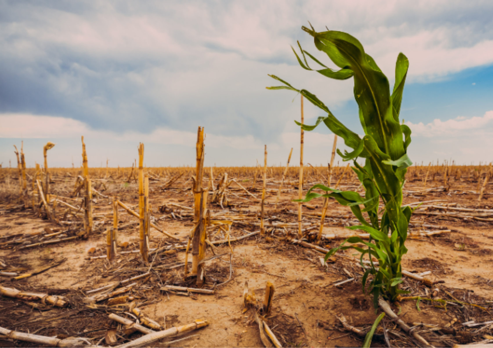
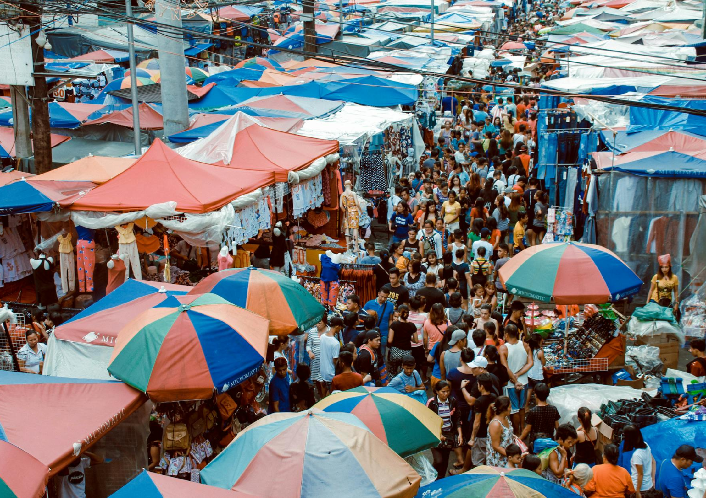
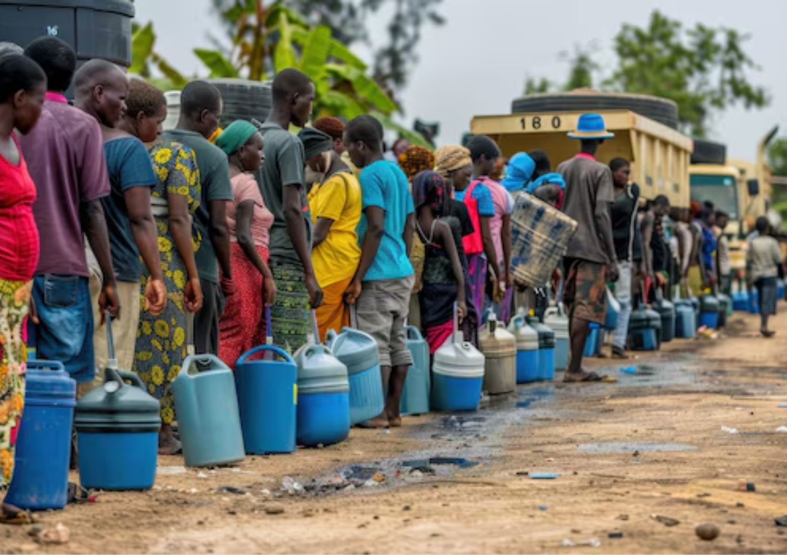

What feels infinite is actually fragile. Every day, billions rely on a resource that is quietly running out.
Rivers are drying. Groundwater is being depleted faster than it can recover. Climate change is shifting rainfall patterns, making water unpredictable.
Scroll to see how availability changes
As water disappears, agriculture collapses, food prices rise, and entire communities are pushed into crisis.



people lack safe drinking water
No safe drinking water
Face scarcity yearly
Wastewater untreated
Risk displacement by 2030
How many people lack access to safe drinking water?